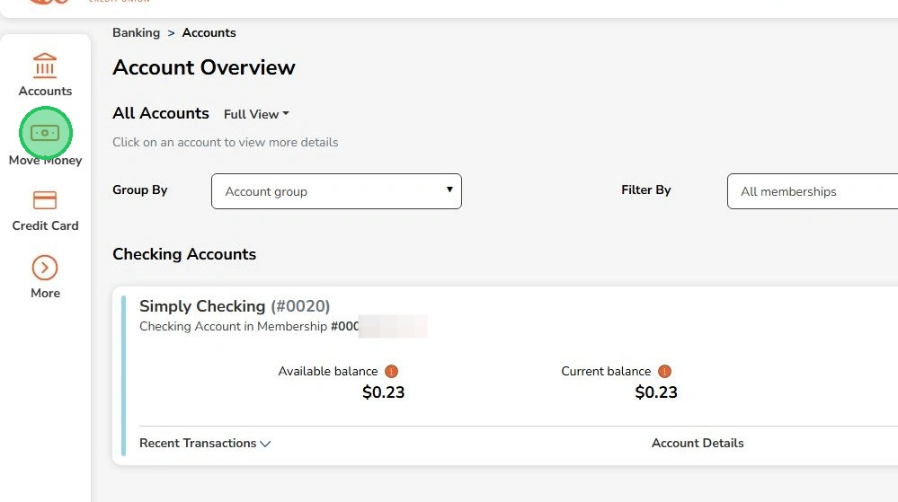
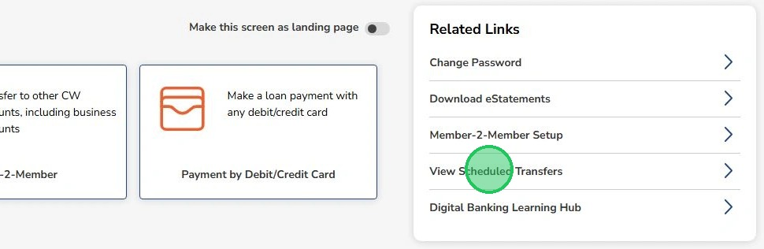
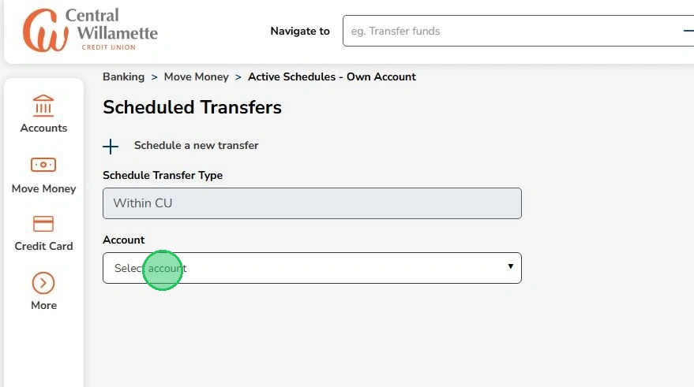
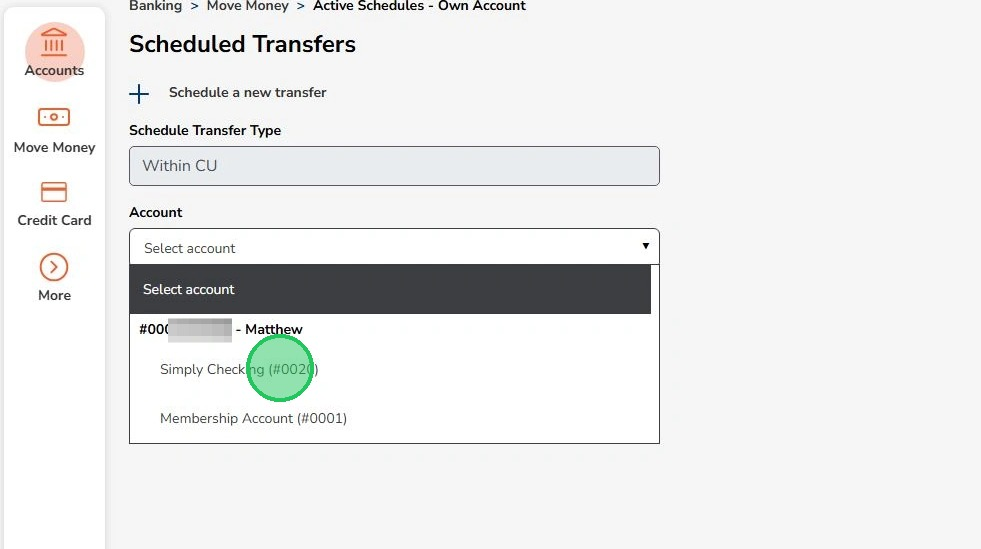
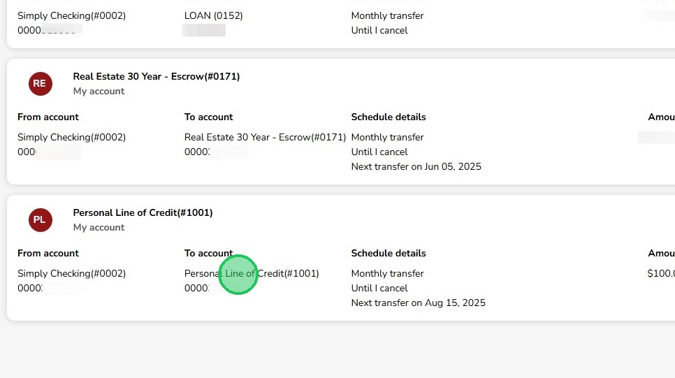
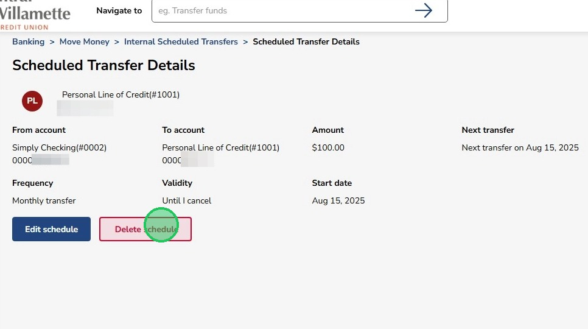
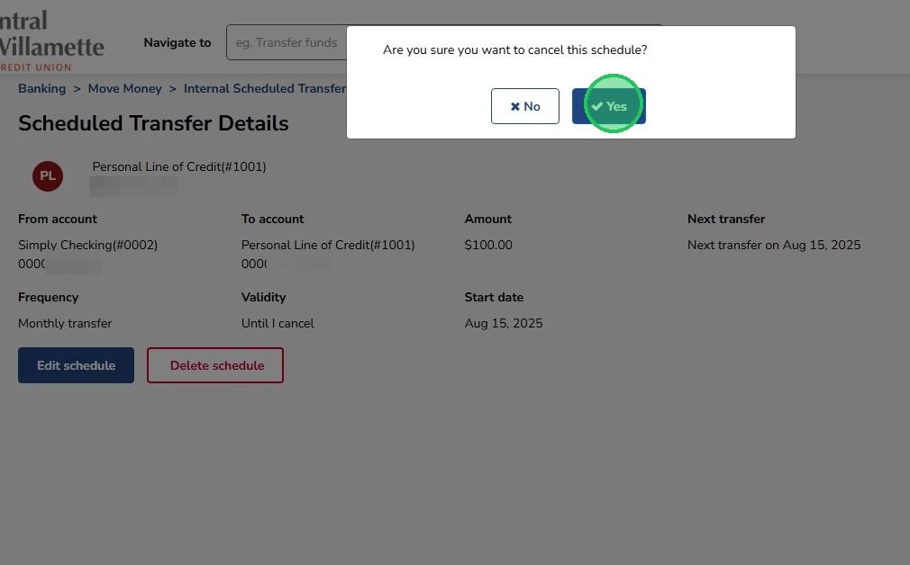

Cancel or Edit Scheduled Internal Payments
Learn how to cancel scheduled internal payments.
1
Click "Move Money"

2
Click "View Scheduled Transfers" on the right hand side

3
Click "Select account" to pick the account that has the scheduled payment

4
Select the account from the dropdown menu

5
Select the scheduled payment to cancel

6
Click "Delete schedule" to cancel the recurring payments. Click "Edit schedule" to edit the recurring payment.

7
Click "Yes" to confirm deleting the scheduled payment
